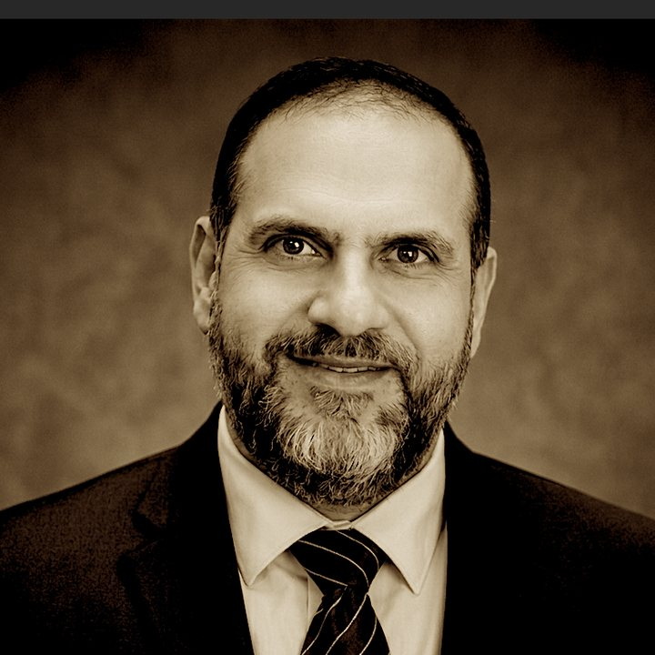

Mohammed F. Safi, PhD, CCC-SLP
Associate Professor of Speech-Language Pathology
Department of Rehabilitation Sciences, College of Health Sciences, Qatar University · Doha, Qatar
Co-Founder & Consultant Speech-Language Pathologist, Global Health and Academic Consultation Practice · Minneapolis, MN
I am a speech-language pathologist and researcher working at the meeting point of clinical practice and neuroscience, with more than twenty years of experience in neurogenic communication disorders and dysphagia. My research examines motor speech disorders, adult and geriatric swallowing, and neuromuscular electrical stimulation (NMES) — including current work using functional near-infrared spectroscopy (fNIRS) to observe how the brain responds to facial stimulation. I trained in swallowing physiology at the National Institutes of Health and Johns Hopkins Hospital, and I have since built speech-language pathology programs and research laboratories across the United States, Saudi Arabia, the United Arab Emirates, and Qatar. Alongside my academic work, I consult with clinicians, hospitals, and universities on dysphagia care, instrumental assessment, and program development.

- PhDCommunication Sciences & Disorders,
Howard University - CCC-SLPASHA-certified
since 2004 - 31Peer-reviewed
journal articles - 20+ yearsClinical practice in medical
speech-language pathology
Areas of focus
Swallowing & dysphagia
Adult and geriatric swallowing disorders, instrumental assessment including fiberoptic endoscopic evaluation of swallowing (FEES), and the physiology of the swallow itself.
Motor speech disorders
Speech difficulties that follow stroke, brain injury, and progressive neurological disease, including dysarthria and acquired apraxia of speech.
Neuromuscular electrical stimulation
How surface electrical stimulation affects the muscles of the tongue, lips, face, and throat — what it can achieve, how much of it people can tolerate, and where the evidence currently stands.
Brain imaging in communication
Using fNIRS to observe brain activity during speech, language, and reading tasks in both typically developing individuals and people with disabilities.
Working with clinicians and institutions
Through the Global Health and Academic Consultation Practice in Minneapolis, I advise clinical teams on dysphagia and motor speech management, guide instrumental swallowing assessment programs, and support universities developing or accrediting speech-language pathology programs.